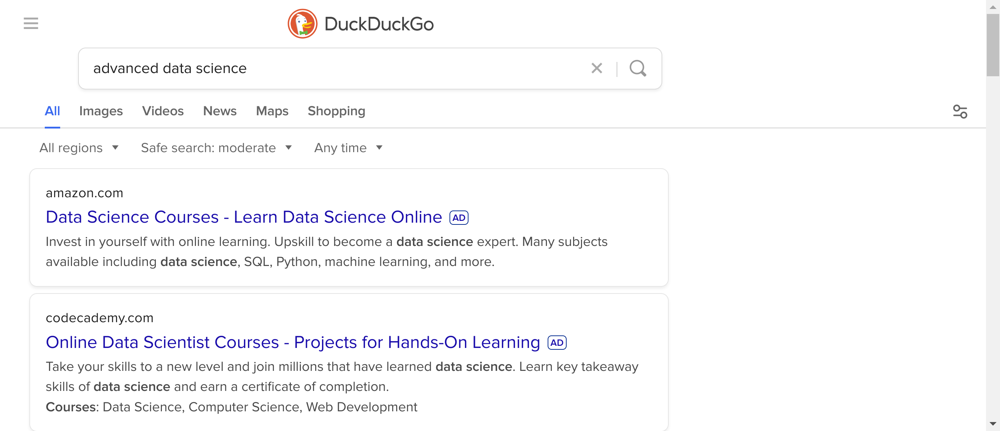

Before you start webscraping make sure to consider what you’re doing. Does your scraping violate TOS? Will it inconvenience the site, other users? Per Uncle Ben: WGPCGR.
Also, before you begin web scraping, look for a download data option or existing solution. Probably someone has run up against the same problem and worked it out. For example, we’re going to scrape some wikipedia tables, which there’s a million other solutions for, including a wikipedia api.
3.2 Basic web scraping
Let’s show an example of static page parsing. Consider scraping the table of top 10 heat waves from wikipedia. First, we open the url, then parse it using BeautifulSoup, then load it into a pandas dataframe.
from urllib.request import urlopenfrom bs4 import BeautifulSoup as bsimport pandas as pdurl ="https://en.wikipedia.org/wiki/List_of_natural_disasters_by_death_toll"html = urlopen(url)parsed = bs(html, 'html.parser').findAll("table")pd.read_html(str(parsed))[11]
Rank
Death toll
Event
Location
Date
0
1.0
72000
2003 European heat wave
Europe
2003
1
2.0
56000
2010 Russian heat wave
Russia
2010
2
3.0
53000
2022 European heat waves
Europe
2022
3
4.0
41,072[42]
1911 French heat wave
France
1911
4
5.0
9500
1901 eastern United States heat wave
United States
1901
5
6.0
5,000–10,000
1988–1990 North American drought
United States
1988
6
7.0
3951
2019 European heat waves
Europe
2019
7
8.0
3,418[43]
2006 European heat wave
Europe
2006
8
9.0
2,541[43]
1998 Indian heat wave
India
1998
9
10.0
2500
2015 Indian heat wave
India
2015
The workflow as as follows:
We used the developer console on the webpage to inspect the page and its properties.
We opened the url with urlopen
We parsed the webpage with BeautifulSoup then used the method findAll on that to search for every table
Pandas has a utility that converts a html tables into a dataframe. In this case it creates a list of tables, where the 12th one is the heatwaves. Note it needs the data to be converted to a string before proceeding.
This variation of web scraping couldn’t be easier. However, what if the content we’re interested in only exists after interacting with the page? Then we need a more sophisticated solution.
3.3 Form filling
Web scraping can require posting to forms, such as logins. This can be done directly with python / R without elaborate programming, for example using the requests library. However, make sure you aren’t violating a web site’s TOS and also make sure you’re not posting your password to github as you commit scraping code. In general, don’t create a security hole for your account by web scraping it. Again, also check to make sure that the site doesn’t have an API with an authentication solution already before writing the code to post authentication. Many websites that want you to programmatically grab the data build an API.
3.4 Programmatically web browsing
Some web scraping requires us to interact with the webpage. This requires a much more advanced solution where we programmatically use a web browser to interact with the page. I’m using selenium and chromedriver. To do this, I had to download chromedriver and set it so that it was in my unix PATH.
from selenium import webdriverdriver = webdriver.Chrome()driver.quit()
If all went well, a chrome window appeared then closed. That’s the browser we’re going to program. If you look closely at the browser before you close it, there’s a banner up to that says “Chrome is being controlled by automated test software.” Let’s go through the example on the selenium docs here. First let’s vist a few pages. We’ll go to my totally awesome web page that I meticulously maintain every day then duckduckgo. We’ll wait a few seconds in between. My site is created and hosted by google sites, which seems reasonable that they would store a cookie so that I can log in and edit my site (which I almost never do). Duckduckgo is a privacy browser, so let’s check to see if they create a cookie. (Hint, I noticed that selenium doesn’t like redirects, so use the actual page url.)
driver = webdriver.Chrome()driver.get("https://sites.google.com/view/bcaffo/home")print(driver.get_cookies())driver.implicitly_wait(5)## Let's get rid of all cookies before we visit duckduckgodriver.delete_all_cookies()driver.get("https://duckduckgo.com/")print(driver.get_cookies())
For me, at least, this prints out the cookie info for my google site then nothing for ddg. (I’m not evaluating the code in quarto since I don’t want to bring up the browser when I compile the document.)
Now let’s find the page elements that we’d like to interact with. There’s a text box that we want to submit a search command into and a button that we’ll need to press. When I go to ddg and press CTRL-I I find that the search box is:
<input id="search_form_input_homepage" class="js-search-input search__input--adv" type="text" autocomplete="off" name="q" tabindex="1" value="" autocapitalize="off" autocorrect="off" placeholder="Search the web without being tracked">
Notice, the name="q" html name for the search form. When I dig around and find the submit button, it’s code is:
Here, we saved the page_source as a variable that then can be parsed with other html parses (like bs4). Play around with the methods associated with driver and navigate the web. You’ll see that selenium is pretty incredible. Here’s the screenshot that we took:

Screenshot of webscraping
3.5 Homework
Write a function that takes a search term, enters it into this link and returns the number of characters from the output.
Write a function that solves THE MAZE and returns your current location at its solution